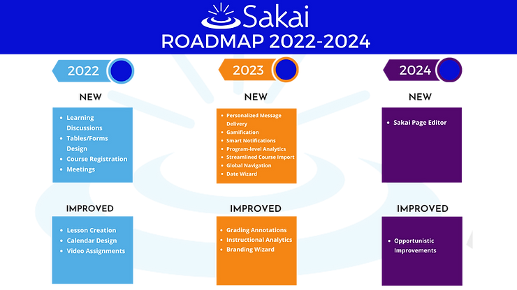

WHERE IS SAKAI GOING FROM 2022-2024?
Mar 24, 2021
1 min read
Sakai's three-year strategic roadmap continues Sakai's ongoing, energetic, rapid innovation.

What's New:
The roadmap prioritizes the development of teaching technologies that increase design flexibility for faculty and enable greater learning outcomes for students.
The Bottom Line: This roadmap guides Sakai's innovation in response to faculty and student needs. It highlights the impact that an energetic community can make on an open platform.
Tags:Sakai future releasesSakai Roadmap
Recent Posts